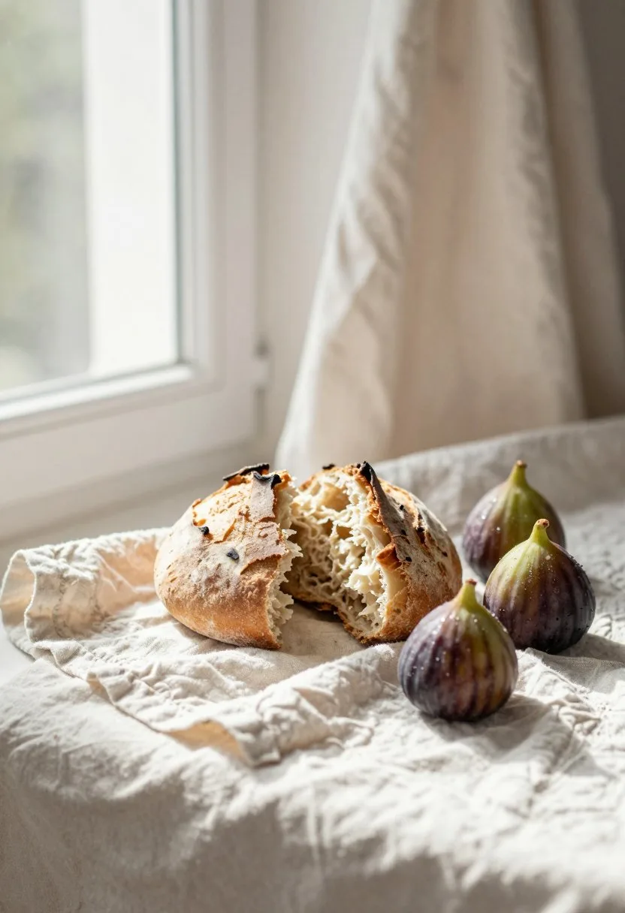
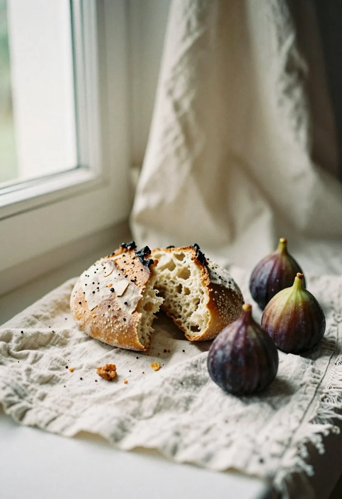
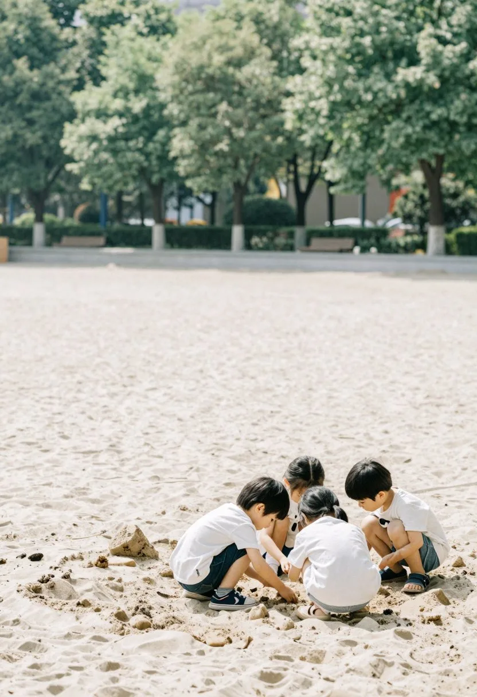

ウェブ技術図鑑 見た目の見本帳
技のスイッチ
説明は、しません。押して、見比べてください。
同じ部品の上に、スイッチが1つ。なし／ありを切り替えるだけです。全部で9つ。最後に、もう1つ。
01紙の色
朝の光は、窓の左から入る。
白い紙に黒い文字。それが一番はっきりして見える、と思っていました。けれど雑誌をめくると、紙は少し生成りで、文字は少しだけ墨の色をしています。画面でも同じことができます。色を2つ変えるだけです。
白 → 生成り（#F7F6EF）、黒 → 墨（#363531）。画像もテクスチャも使っていません。
02行間と字間
日本語は、行と行のあいだを広く取ると、読むときの息つぎが楽になります。文字と文字のあいだも、ほんの少しだけあけます。目安は、行間が文字の1.9倍、字間が文字の0.05倍。同じ文章なのに、読み終わるまでの疲れ方が変わります。これは、ほぼ日の本文を実際に測った数字です。
行間 1.5 → 1.9、字間 0 → 0.05em。文章は一文字も変えていません。
03ボタン
角を2つ面取りして、矢印を枠で区切ったセルに。触れると矢印だけ色が変わります。
04行リンク
番号・題・寸法線・矢印を一列に。製図の寸法線のように、両端に目盛があります。
05文字の出方
霧がうすれて、川が見えて、湯気が立つ。
句ごとに0.35秒ずつ遅らせて、透明から現れます。1文字ずつにはしません。
06カードの縁
カードの外側に隠した縁の層を、触れたときだけ clip-path でじわっと広げます。カードの大きさは変わりません。
07貼り付く見出し
お食事
夕食は、囲炉裏のある座敷で。川魚は炭火でゆっくり焼きます。
山菜は朝に摘んだものを、その日のうちに。味付けは塩と、少しの醤油だけです。
ご飯は土鍋で炊きます。おこげができたら、それも一緒にお出しします。
朝食は、湯豆腐と、焼いた干物と、漬物。それから、庭の畑の野菜の味噌汁です。
食べきれないときは、言ってください。おにぎりにして、お部屋にお持ちします。
この枠の中をスクロールしてみてください。見出しが、上に残るかどうか。
position: sticky を見出しに1行。長い文章の間、見出しが枠の上に貼り付いて、今どこを読んでいるか分かります。
08迷子にならない
湯
源泉は裏山から引いています。朝一番は少し熱め。
露天は夜十時まで。雪の日は、湯気で何も見えません。
内湯は檜。香りが強い日と弱い日があります。
部屋
八畳の和室が四つ。川側の二部屋は、水の音が近いです。
布団は夕食のあいだに敷きます。
テレビはありません。本棚があります。
料理
夕食は六時半から。囲炉裏の座敷で。
川魚は炭火で。山菜は朝に摘んだもの。
朝食は湯豆腐と干物と味噌汁です。
ここが一番下です。上の「↑」で先頭へ戻れます。
現在地（番号＋題）を常に表示、目次は1タップ、先頭へ戻るボタン。長いページでも、今どこにいるか分かります。
09AI画像の裏技



指示文の末尾soft bright daylight from a window on the left, airy and light, high-key, pale cream and white tones, gentle soft shadows, film still, fine film grain左の窓からの、やわらかく明るい昼の光、風通しよく軽やかに、ハイキー（明るく飛ばした調子）、淡いクリームと白の色調、やわらかな影、映画の1コマ、細かいフィルムの粒子
変えたのは「airy and light, high-key」の2語だけ。seed も構図も同じです。指示文の言葉ひとつで、写真の空気はこれだけ変わります。どちらが好みかは、人それぞれ。この見本帳では、外した方を使っています。
ここまでのページは、
わざと技なしで組んでありました。
最後のスイッチです。今見ていたこのページに、9つの技を全部かけます。
表紙に戻って、技が1つずつ重なります。もう一度押すと、素朴なページに戻ります。
最後にもう1つ。スイッチにできない技が、余白と配置。これだけは、ページ全体にしかかけられません。